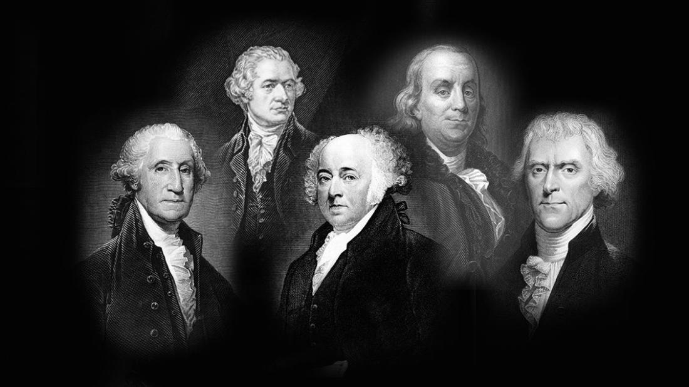

Founding Fathers
Inspirational people usually have beaten some kind of odds. This sets them apart from the rest of us normal folk. Where your inspiration comes from can say a lot about your own character.
The nations founding fathers are my inspiration for the following reasons.
- Motivated to make us a nation
- Genious in developing the constitution
- Original intellectual diversity: ideas from scholars and self learning
- Lastly without them our country may not have been
With the sacrifice and accomplishment of these gentlemen we are afforded the power and freedom we enjoy today. Efforts during the revolutionary war and at its close were attended to by some of them. But their greatest moment was guiding us towards our founding document, the Constitution. A document that guides judicial president to this very moment.